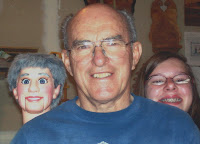

Story behind the photo
3/22/2010
{kind=link}

Nicole calls this figure "Clark", and it's her favorite of all I build. So whenever I build one, she uses the figure to try to talk me out of packing and shipping it. Rather, she believes I should send it home with her. Not! On this day when I was preparing a box for shipping this figure, Nicole was having Clark peek over my shoulder to tell me how much he wanted to go with Nicole, rather than be packed and shipped. I had my camera at hand, so quickly held it up in front of us and snapped the photo you see.
When Nicole saw this photo on my post requesting caption ideas, I received the following text on my phone with her caption suggestion:
"A heartbroken granddaughter, a wise grandparent, and the dummy they all adored. In the end it was two against one; the dummy wasn't the loner either!"
(Don't feel too sorry for Nicole, she and her sister are on Spring break so Adelia and I are taking them out for breakfast this morning. The thought of Clark won't enter Nicole's mind - I hope :-)